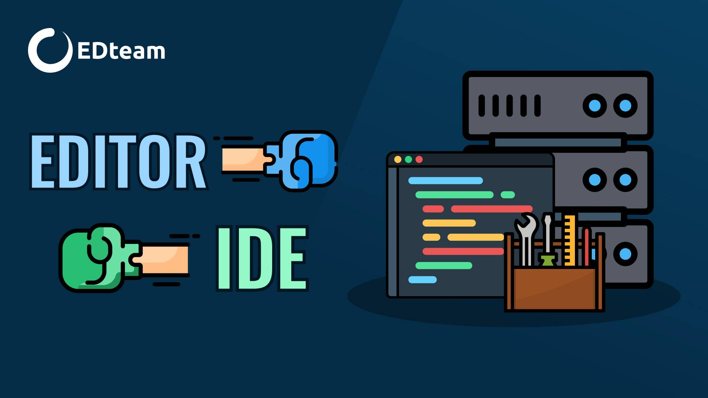
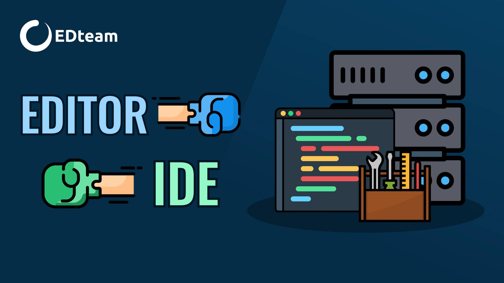
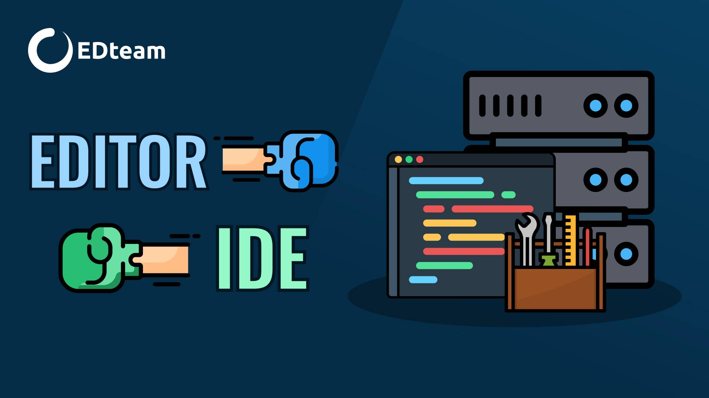

Galería de Herramientas y Lenguajes de IA
A continuación se presentan imágenes relacionadas con entornos de programación y tecnologías usadas en inteligencia artificial.

 

A continuación se presentan imágenes relacionadas con entornos de programación y tecnologías usadas en inteligencia artificial.
